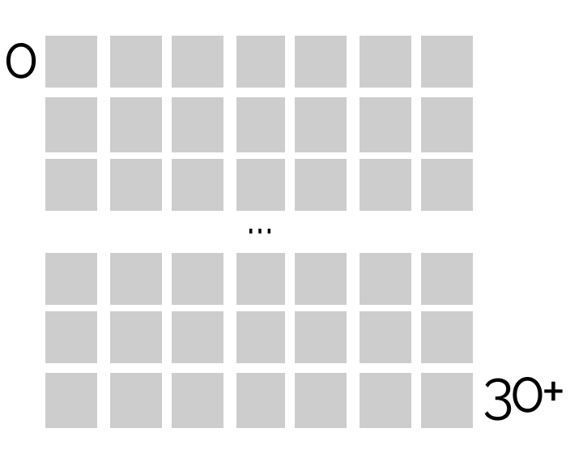

State Of The Industry Survey Results 2022
Please, use desktop to view
There are 1404* squares on the screen — each one represents a Data Visualization Society SOTI response. Hover over a square to learn more about the respondent in the tooltip.
Respondent No: 0
Country: Q08
Secret weapon: "Other" from Q36 about tools
Inspired by: Q55
Squares are sorted based on years of experience in data visualization Q03. Click on any square to flip it along with the similar ones based on criteria of your choice. Just tick the checkboxes you want to take into account.
Countries Q08 were grouped and coloured by :
Americas (60%)
Europe (27.5%)
Asia (6%)
Oceania (3%)
Africa (2%)
Unknown (1.5%)
Fun fact: out of those working on site, the majority (44%) would prefer to switch to hybrid Q11, Q12. The rest are happy with their :
◯ Remote ◐ Hybrid ◉ On site
for project work Q07:
✦
< 100$
✶
100 - 200$
✷
200 - 300$
✺
≥ 300$
However, the flipping will take into account a range provided in the survey, which is more precise. Beware as only 21% of repondents provided a $ answer.
࠾
High school diploma, technical school
࠾࠾
Bachelor’s or associate’s degree, some college
࠾࠾࠾
Master’s degree
࠾࠾࠾࠾
Doctoral degree
➝
ª
:
\
man
/
woman
|
self-described
0 new responses revealed, 0% flipped in total